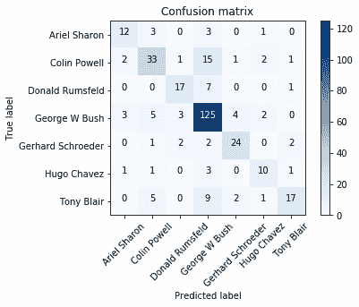

这本书经历了几个不同的特征工程算法，我们已经与许多不同的数据集。在这一章中，我们将通过几个案例研究来帮助你加深对我们在书中涉及的主题的理解。我们将从头到尾完成两个完整的案例研究，以进一步了解特征工程任务如何帮助我们为现实生活中的应用程序创建机器学习管道。对于每个案例研究，我们将了解:
此外，我们将查看以下案例:
我们开始吧！
我们的第一个案例研究将使用 scikit-learn 库中的Wild数据集中一个名为标签人脸的流行数据集来预测图像数据的标签。该数据集被称为Olivetti Face数据集，它包括名人的脸部照片，并带有适当的标签。我们的任务是面部识别，这是一个受监督的机器学习模型，能够在给定一张人脸图像的情况下预测出这个人的名字。
图像处理和面部识别影响深远。从视频/图像中的人群中快速识别人脸的能力对于物理安全和大型社交媒体公司来说至关重要。谷歌等搜索引擎凭借其图像搜索功能，正在使用图像识别算法来匹配图像并量化相似性，以至于我们可以上传某人的照片来获取同一个人的所有其他图像。
让我们从加载我们的数据集和其他几个我们将用来绘制数据的导入语句开始。在 Jupyter 笔记本(iPython)中开始记录您将使用的所有导入语句是一个很好的做法。显然，您可能会在工作进行到一半时意识到您需要导入一个新的包；此外，为了保持有组织性，在你工作的开始阶段使用它们是一个好主意。
下面的代码块包括我们将在这个案例研究中使用的import语句。我们将在示例中利用每一个导入，当我们完成示例时，您将会清楚每个导入的用途:
# the olivetti face dataset
from sklearn.datasets import fetch_lfw_people
# feature extraction modules from sklearn.decomposition import PCA from sklearn.discriminant_analysis import LinearDiscriminantAnalysis
# feature scaling module
from sklearn.preprocessing import StandardScaler
# standard python modules
from time import time
import numpy as np
import matplotlib.pyplot as plt
%matplotlib inline # this ensures that your plotting will show directly in your jupyter notebook
# scikit-learn model selection modules from sklearn.model_selection import train_test_split, GridSearchCV, cross_val_score
# metrics
from sklearn.metrics import classification_report, confusion_matrix, accuracy_score
# machine learning modules
from sklearn.linear_model import LogisticRegression
from sklearn.pipeline import Pipeline
现在，我们可以开始了！我们进行如下操作:
lfw_people = fetch_lfw_people(min_faces_per_person=70, resize=0.4)
如您所见，我们调用了几个可选参数，具体来说就是min_faces_per_person和resize。第一个参数将只保留我们指定的最少数量的不同图片中的人的图片。我们将此设置为每人最少拥有70张不同的照片。resize参数是用来调整每个人脸图片大小的比例。
n_samples, h, w = lfw_people.images.shape n_samples, h, w
(1288, 50, 37)
我们看到有1288个样本(图像),每个图像的高度为50像素，宽度为37像素。
# for machine learning we use the data directly (as relative pixel positions info is ignored by this model)
X = lfw_people.data y = lfw_people.target n_features = X.shape[1]
n_features
1850
n_features最终拥有1,850列是因为:

我们现在可以看到数据的完整形态，如下所示:
X.shape
(1288, 1850)
我们有 1288 行乘以 1850 列。为了进行一些简短的探索性分析，我们可以使用以下代码绘制其中一幅图像:
# plot one of the faces plt.imshow(X[0].reshape((h, w)), cmap=plt.cm.gray) lfw_people.target_names[y[0]]
这将为我们提供以下标签:
'Hugo Chavez'
图像如下:

现在，让我们在应用缩放模块后绘制相同的图像，如下所示:
plt.imshow(StandardScaler().fit_transform(X)[0].reshape((h, w)), cmap=plt.cm.gray) lfw_people.target_names[y[0]]
这给了我们这样的输出:
'Hugo Chavez'
对于前面的代码，我们得到了以下图像:

在这里，你可以看到图像略有不同，脸部周围的像素更暗。现在，让我们设置标签来预测:
# the label to predict is the id of the person target_names = lfw_people.target_names n_classes = target_names.shape[0] print "Total dataset size:" print "n_samples: %d" % n_samples print "n_features: %d" % n_features print "n_classes: %d" % n_classes
这为我们提供了以下输出:
Total dataset size: n_samples: 1288 n_features: 1850 n_classes: 7
现在，我们可以继续讨论将用于创建面部识别模型的机器学习管道:
# let's split our dataset into training and testing X_train, X_test, y_train, y_test = train_test_split(X, y, test_size=0.25, random_state=1)
# instantiate the PCA module
pca = PCA(n_components=200, whiten=True)
# create a pipeline called preprocessing that will scale data and then apply PCA
preprocessing = Pipeline([('scale', StandardScaler()), ('pca', pca)])
print "Extracting the top %d eigenfaces from %d faces" % (200, X_train.shape[0]) # fit the pipeline to the training set preprocessing.fit(X_train) # grab the PCA from the pipeline extracted_pca = preprocessing.steps[1][1]
Extracting the top 200 eigenfaces from 966 faces
# Scree Plot plt.plot(np.cumsum(extracted_pca.explained_variance_ratio_))
我们可以看到，与 1，850 个原始特性相比，从 100 个组件开始可以捕获超过 90%的差异。
comp = extracted_pca.components_
image_shape = (h, w)
def plot_gallery(title, images, n_col, n_row):
plt.figure(figsize=(2. * n_col, 2.26 * n_row))
plt.suptitle(title, size=16)
for i, comp in enumerate(images):
plt.subplot(n_row, n_col, i + 1)
vmax = max(comp.max(), -comp.min())
plt.imshow(comp.reshape(image_shape), cmap=plt.cm.gray,
vmin=-vmax, vmax=vmax)
plt.xticks(())
plt.yticks(())
plt.subplots_adjust(0.01, 0.05, 0.99, 0.93, 0.04, 0.)
plt.show()
plot_gallery('PCA components', comp[:16], 4,4)
输出给我们这些图像:
这让我们可以看到特定行和列的 PCA 组件！这些特征脸是 PCA 模块正在寻找的人类的提取特征。将此结果与我们在第 7 章、特征学习中的结果进行比较，其中我们使用 PCA 提取特征数字。这些组件中的每一个都意味着存储了关于面部的重要信息，可以用来区分不同的人。例如:
当然，这些是我们的解释，不同人脸数据集的不同特征脸将输出不同的图像/分量。我们将继续创建一个函数，它将允许我们清晰地打印一个可读性更好的混淆矩阵，其中包含热点标签和标准化选项:
import itertools
def plot_confusion_matrix(cm, classes,
normalize=False,
title='Confusion matrix',
cmap=plt.cm.Blues):
plt.imshow(cm, interpolation='nearest', cmap=cmap)
plt.title(title)
plt.colorbar()
tick_marks = np.arange(len(classes))
plt.xticks(tick_marks, classes, rotation=45)
plt.yticks(tick_marks, classes)
thresh = cm.max() / 2.
for i, j in itertools.product(range(cm.shape[0]), range(cm.shape[1])):
plt.text(j, i, cm[i, j],
horizontalalignment="center",
color="white" if cm[i, j] > thresh else "black")
plt.ylabel('True label')
plt.xlabel('Predicted label')
现在，我们可以在不使用 PCA 的情况下进行拟合，以查看差异。我们将调用我们的plot_confusion_matrix函数，这样我们可以可视化我们模型的准确性:
# fit without using PCA to see what the difference will be
t0 = time()
param_grid = {'C': [1e-2, 1e-1,1e0,1e1, 1e2]}
clf = GridSearchCV(logreg, param_grid)
clf = clf.fit(X_train, y_train)
best_clf = clf.best_estimator_
# Predicting people's names on the test set
y_pred = best_clf.predict(X_test)
print accuracy_score(y_pred, y_test), "Accuracy score for best estimator"
print(classification_report(y_test, y_pred, target_names=target_names))
print plot_confusion_matrix(confusion_matrix(y_test, y_pred, labels=range(n_classes)), target_names)
print round((time() - t0), 1), "seconds to grid search and predict the test set"
输出如下所示:
0.813664596273 Accuracy score for best estimator
precision recall f1-score support
Ariel Sharon 0.72 0.68 0.70 19
Colin Powell 0.85 0.71 0.77 55
Donald Rumsfeld 0.62 0.72 0.67 25
George W Bush 0.88 0.91 0.89 142
Gerhard Schroeder 0.79 0.84 0.81 31
Hugo Chavez 0.87 0.81 0.84 16
Tony Blair 0.71 0.71 0.71 34
avg / total 0.82 0.81 0.81 322
None
39.9 seconds to grid search and predict the test set
仅使用原始像素，我们的线性模型能够达到 81.3%的 T21 精确度。 这次我们来应用 PCA，看看会有什么不同。现在，我们将提取的组件数量硬编码为 200:
t0 = time()
face_pipeline = Pipeline(steps=[('PCA', PCA(n_components=200)), ('logistic', logreg)])
pipe_param_grid = {'logistic__C': [1e-2, 1e-1,1e0,1e1, 1e2]}
clf = GridSearchCV(face_pipeline, pipe_param_grid)
clf = clf.fit(X_train, y_train)
best_clf = clf.best_estimator_
# Predicting people's names on the test set
y_pred = best_clf.predict(X_test)
print accuracy_score(y_pred, y_test), "Accuracy score for best estimator"
print(classification_report(y_test, y_pred, target_names=target_names))
print plot_confusion_matrix(confusion_matrix(y_test, y_pred, labels=range(n_classes)), target_names)
print round((time() - t0), 1), "seconds to grid search and predict the test set"PCA 的输出如下所示:
0.739130434783 Accuracy score for best estimator
precision recall f1-score support
Ariel Sharon 0.67 0.63 0.65 19
Colin Powell 0.69 0.60 0.64 55
Donald Rumsfeld 0.74 0.68 0.71 25
George W Bush 0.76 0.88 0.82 142
Gerhard Schroeder 0.77 0.77 0.77 31
Hugo Chavez 0.62 0.62 0.62 16
Tony Blair 0.77 0.50 0.61 34
avg / total 0.74 0.74 0.73 322
None
74.5 seconds to grid search and predict the test set我们得到如下图:
有意思！我们可以看到，通过应用 PCA，我们的准确率下降到了 73.9% ，预测时间增加了。然而，我们不应该气馁；这可能意味着我们还没有找到要使用的最佳组件数量。
让我们在测试集中绘制一些预测名称与真实名称的对比图，以查看我们的模型产生的一些错误/正确标签:

在处理图像时，这是一种很好的可视化结果的方式。
现在让我们实现一个网格搜索，为我们的数据找到最佳模型和精确度。首先，我们将创建一个函数，它将为我们执行网格搜索，并为我们打印精确度、参数、平均拟合时间和平均得分时间。这个函数是这样创建的:
def get_best_model_and_accuracy(model, params, X, y):
grid = GridSearchCV(model, # the model to grid search
params, # the parameter set to try
error_score=0.) # if a parameter set raises an error, continue and set the performance as a big, fat 0
grid.fit(X, y) # fit the model and parameters
# our classical metric for performance
print "Best Accuracy: {}".format(grid.best_score_)
# the best parameters that caused the best accuracy
print "Best Parameters: {}".format(grid.best_params_)
# the average time it took a model to fit to the data (in seconds)
print "Average Time to Fit (s): {}".format(round(grid.cv_results_['mean_fit_time'].mean(), 3))
# the average time it took a model to predict out of sample data (in seconds)
# this metric gives us insight into how this model will perform in real-time analysis
print "Average Time to Score (s): {}".format(round(grid.cv_results_['mean_score_time'].mean(), 3))
现在，我们可以创建一个更大的网格搜索管道，其中包括更多组件，即:
创建大型网格搜索管道的代码如下:
# Create a larger pipeline to gridsearch
face_params = {'logistic__C':[1e-2, 1e-1, 1e0, 1e1, 1e2],
'preprocessing__pca__n_components':[100, 150, 200, 250, 300],
'preprocessing__pca__whiten':[True, False],
'preprocessing__lda__n_components':range(1, 7)
# [1, 2, 3, 4, 5, 6] recall the max allowed is n_classes-1
}
pca = PCA()
lda = LinearDiscriminantAnalysis()
preprocessing = Pipeline([('scale', StandardScaler()), ('pca', pca), ('lda', lda)])
logreg = LogisticRegression()
face_pipeline = Pipeline(steps=[('preprocessing', preprocessing), ('logistic', logreg)])
get_best_model_and_accuracy(face_pipeline, face_params, X, y)
结果如下:
Best Accuracy: 0.840062111801
Best Parameters: {'logistic__C': 0.1, 'preprocessing__pca__n_components': 150, 'preprocessing__lda__n_components': 5, 'preprocessing__pca__whiten': False}
Average Time to Fit (s): 0.214
Average Time to Score (s): 0.009
我们可以看到，我们的模型精度提高了很多，我们的预测和训练时间也非常快！
我们的第二个案例研究将查看酒店评论数据，并尝试将评论按主题分组。我们将使用潜在语义分析 ( LSA )，这是对稀疏文本文档-术语矩阵应用 PCA 的过程的名称。这样做是为了找到文本中的潜在结构，以便进行分类和聚类。
文本聚类是将不同的主题分配给文本片段的行为，目的是理解文档是关于什么的。想象一下，一家大型连锁酒店每周会收到来自世界各地的数千条评论。酒店的员工想知道人们在说什么，以便更好地了解他们做得好的地方和可以改进的地方。
当然，这里的限制因素是人类快速正确阅读所有这些文本的能力。我们可以训练机器识别人们正在谈论的事物的类型，然后预测新的和即将到来的评论的主题，以便自动化这一过程。
我们将用来实现这个结果的数据集来自 Kaggle，可以在这里找到:https://www.kaggle.com/datafiniti/hotel-reviews。它包含超过 35，000 条对全球 1，000 家不同酒店的不同评论。我们的工作将是分离评论的文本，并识别主题(人们在谈论什么)。然后，我们将创建一个机器学习模型，它可以预测/识别即将到来的评论的主题:
首先，让我们组织我们的导入语句，如下所示:
# used for row normalization
from sklearn.preprocessing import Normalizer
# scikit-learn's KMeans clustering module from sklearn.cluster import KMeans
# data manipulation tool
import pandas as pd
# import a sentence tokenizer from nltk from nltk.tokenize import sent_tokenize
# feature extraction module (TruncatedSVD will be explained soon)
from sklearn.decomposition import PCA from sklearn.decomposition import TruncatedSVD
现在，让我们加载数据，如下面的代码片段所示:
hotel_reviews = pd.read_csv('../data/7282_1.csv')
一旦我们导入了数据，让我们来看看原始文本数据是什么样子的。
让我们看看数据集的shape:
hotel_reviews.shape
(35912, 19)
这向我们展示了我们正在处理 35，912 行和 19 列。最终，我们将只关心包含文本数据的列，但是现在，让我们看看前几行是什么样子，以便更好地理解我们的数据中包含了什么:
hotel_reviews.head()
这为我们提供了下表:
|
地址 |
类别 |
城市 |
国家 |
纬度 |
经度 |
名称 |
邮政编码 |
省 |
评论。 |
点评。 |
点评。 |
点评。 |
点评。 |
点评。 |
点评。 标题 |
点评。 用户城市 |
点评。 用户名 |
点评。 用户省份 |
|
|
0 |
里维埃拉圣尼科尔 11/a |
酒店 |
马布尔顿 |
美国 |
45.421611 |
12.376187 |
鲁索宫酒店 |
30126 |
通用航空 |
2013-09-22T00:00:00Z |
2016-10-24T00:00:25Z |
圆盘烤饼 |
圆盘烤饼 |
4.0 |
沿着海滨愉快的步行 10 分钟到 th... |
远离十字路口的好位置 |
圆盘烤饼 |
拉斯(肯特) |
圆盘烤饼 |
|
1 |
里维埃拉圣尼科尔 11/a |
酒店 |
马布尔顿 |
美国 |
45.421611 |
12.376187 |
鲁索宫酒店 |
30126 |
通用航空 |
2015-04-03T00:00:00Z |
2016-10-24T00:00:25Z |
圆盘烤饼 |
圆盘烤饼 |
5.0 |
非常可爱的酒店。停留在最顶端... |
带按摩浴缸的大酒店！ |
圆盘烤饼 |
一个旅行者 |
圆盘烤饼 |
|
2 |
里维埃拉圣尼科尔 11/a |
酒店 |
马布尔顿 |
美国 |
45.421611 |
12.376187 |
鲁索宫酒店 |
30126 |
通用航空 |
2014-05-13T00:00:00Z |
2016-10-24T00:00:25Z |
圆盘烤饼 |
圆盘烤饼 |
5.0 |
Ett mycket bra 酒店。不要浪费时间... |
卢恩特·拉格 |
圆盘烤饼 |
孟珺 |
圆盘烤饼 |
|
3 |
里维埃拉圣尼科尔 11/a |
酒店 |
马布尔顿 |
美国 |
45.421611 |
12.376187 |
鲁索宫酒店 |
30126 |
通用航空 |
2013-10-27T00:00:00Z |
2016-10-24T00:00:25Z |
圆盘烤饼 |
圆盘烤饼 |
5.0 |
十月份我们在这里住了四个晚上。这... |
丽都的好位置。 |
圆盘烤饼 |
朱莉 |
圆盘烤饼 |
|
4 |
里维埃拉圣尼科尔 11/a |
酒店 |
马布尔顿 |
美国 |
45.421611 |
12.376187 |
鲁索宫酒店 |
30126 |
通用航空 |
2015-03-05T00:00:00Z |
2016-10-24T00:00:25Z |
圆盘烤饼 |
圆盘烤饼 |
5.0 |
十月份我们在这里住了四个晚上。这... |
������ ��������������� |
圆盘烤饼 |
成哲 |
圆盘烤饼 |
让我们只包括来自美国的评论，以便尝试只包括英文评论。首先，让我们绘制我们的数据，就像这样:
# plot the lats and longs of reviews hotel_reviews.plot.scatter(x='longitude', y='latitude')
输出如下所示:

为了使我们的数据集更容易使用，让我们使用 pandas 来划分评论的子集，只包括来自美国的评论:
# Filter to only include reviews within the US hotel_reviews = hotel_reviews[((hotel_reviews['latitude']<=50.0) & (hotel_reviews['latitude']>=24.0)) & ((hotel_reviews['longitude']<=-65.0) & (hotel_reviews['longitude']>=-122.0))] # Plot the lats and longs again hotel_reviews.plot.scatter(x='longitude', y='latitude') # Only looking at reviews that are coming from the US
输出如下所示:
它看起来像美国地图！现在让我们shape一下过滤后的数据集:
hotel_reviews.shape
我们有 30，692 行和 19 列。当我们为酒店写评论时，我们通常在同一篇评论中写不同的事情。出于这个原因，我们将尝试给单句而不是整篇综述分配主题。
为此，让我们从数据中获取文本列，如下所示:
texts = hotel_reviews['reviews.text']
我们可以将文本标记成句子，以便扩展我们的数据集。我们从nltk包(自然语言工具包)中导入了一个名为sent_tokenize的函数。这个函数将接受一个字符串，并将句子输出为由标点符号分隔的有序句子列表。例如:
sent_tokenize("hello! I am Sinan. How are you??? I am fine")
['hello!', 'I am Sinan.', 'How are you???', 'I am fine']
我们将使用 Python 中的一些 reduce 逻辑将这个函数应用于我们的整个语料库。本质上，我们将sent_tokenize函数应用于每个评论，并创建一个名为sentences的列表来保存我们所有的句子:
sentences = reduce(lambda x, y:x+y, texts.apply(lambda x: sent_tokenize(str(x).decode('utf-8'))))我们现在可以看到我们有多少个句子:
# the number of sentences len(sentences)
118151
这给了我们 118，151 个句子——我们必须处理的句子数量。为了创建文档术语矩阵，让我们在句子中使用TfidfVectorizer:
from sklearn.feature_extraction.text import TfidfVectorizer tfidf = TfidfVectorizer(ngram_range=(1, 2), stop_words='english') tfidf_transformed = tfidf.fit_transform(sentences) tfidf_transformed
我们得到以下结果:
<118151x280901 sparse matrix of type '<type 'numpy.float64'>'
with 1180273 stored elements in Compressed Sparse Row format>
现在，让我们试着用主成分分析来拟合这些数据，就像这样:
# try to fit PCA PCA(n_components=1000).fit(tfidf_transformed)
运行这段代码时，我们得到以下错误:
TypeError: PCA does not support sparse input. See TruncatedSVD for a possible alternative.
is 错误告诉我们，对于 PCA，我们不能有稀疏输入，它建议我们使用 TruncatedSVD 。奇异值分解 ( SVD )是一个矩阵技巧用于计算相同的 PCA 分量(当数据居中时)，这允许我们处理稀疏矩阵。让我们采纳这个建议，使用TruncatedSVD模块。
在我们继续我们的酒店数据之前，让我们用我们的iris数据做一个快速实验，看看我们的 SVD 和 PCA 是否真的给了我们相同的成分:
# import the Iris dataset from scikit-learn
from sklearn.datasets import load_iris
# load the Iris dataset
iris = load_iris()
# seperate the features and response variable
iris_X, iris_y = iris.data, iris.target
X_centered = StandardScaler(with_std=False).fit_transform(iris_X)
X_scaled = StandardScaler().fit_transform(iris_X)
# test if we get the same components by using PCA and SVD
svd = TruncatedSVD(n_components=2)
pca = PCA(n_components=2)
# check if components of PCA and TruncatedSVD are same for a dataset
# by substracting the two matricies and seeing if, on average, the elements are very close to 0
print (pca.fit(iris_X).components_ - svd.fit(iris_X).components_).mean()
0.130183123094 # not close to 0
# matrices are NOT the same
# check if components of PCA and TruncatedSVD are same for a centered dataset
print (pca.fit(X_centered).components_ - svd.fit(X_centered).components_).mean()
1.73472347598e-18 # close to 0
# matrices ARE the same
# check if components of PCA and TruncatedSVD are same for a scaled dataset
print (pca.fit(X_scaled).components_ - svd.fit(X_scaled).components_).mean()
-1.59160878921e-16 # close to 0
# matrices ARE the same
svd = TruncatedSVD(n_components=1000) svd.fit(tfidf_transformed)
输出如下所示:
TruncatedSVD(algorithm='randomized', n_components=1000, n_iter=5,
random_state=None, tol=0.0)
# Scree Plot plt.plot(np.cumsum(svd.explained_variance_ratio_))
这给了我们以下的情节:

我们可以看到，1，000 个组件获得了大约 30%的方差。现在，让我们建立我们的 LSA 管道。
潜在语义分析 ( LSA )是一个特征提取工具。这对于由这三个步骤组成的系列文本很有帮助，我们在本书中已经学过:
我们可以创建一个 scikit-learn 管道来执行 LSA:
tfidf = TfidfVectorizer(ngram_range=(1, 2), stop_words='english')
svd = TruncatedSVD(n_components=10) # will extract 10 "topics"
normalizer = Normalizer() # will give each document a unit norm
lsa = Pipeline(steps=[('tfidf', tfidf), ('svd', svd), ('normalizer', normalizer)])
现在，我们可以拟合和转换我们的句子数据，就像这样:
lsa_sentences = lsa.fit_transform(sentences) lsa_sentences.shape
(118151, 10)
我们有118151行和10列。这 10 列来自 10 个提取的 PCA/SVD 分量。我们现在可以对我们的lsa_sentences应用一个KMeans聚类，如下所示:
cluster = KMeans(n_clusters=10) cluster.fit(lsa_sentences)
我们假设读者对集群有基本的了解。有关集群和集群如何工作的更多信息，请参考 Packt 的数据科学原理:https://www . packtpub . com/big-Data-and-business-intelligence/Principles-Data-Science
需要注意的是，我们为KMeans和我们的 PCA 都选择了 10 个。这是不必要的。通常，您可以在 SVD 模块中提取更多的列。对于10集群，我们基本上是说，我认为有 10 个主题是人们正在谈论的。请将每个句子指定为这些主题之一。
输出如下所示:
KMeans(algorithm='auto', copy_x=True, init='k-means++', max_iter=300,
n_clusters=10, n_init=10, n_jobs=1, precompute_distances='auto',
random_state=None, tol=0.0001, verbose=0)
让我们对我们的原始文档术语形状矩阵(118151, 280901)进行时间拟合和预测，然后对我们的形状潜在语义分析(118151, 10)进行时间拟合和预测，以查看差异:
%%timeit # time it takes to cluster on the original document-term matrix of shape (118151, 280901) cluster.fit(tfidf_transformed)
这给了我们:
1 loop, best of 3: 4min 15s per loop
%%timeit # also time the prediction phase of the Kmeans clustering cluster.predict(tfidf_transformed)
这给了我们:
10 loops, best of 3: 120 ms per loop
%%timeit # time the time to cluster after latent semantic analysis of shape (118151, 10) cluster.fit(lsa_sentences)
这给了我们:
1 loop, best of 3: 3.6 s per loop
%%timeit # also time the prediction phase of the Kmeans clustering after LSA was performed cluster.predict(lsa_sentences)
这给了我们:
10 loops, best of 3: 34 ms per loop
我们可以看到，LSA 数据集比在原始tfidf数据集上预测的速度快了四倍多。
cluster.transform(lsa_sentences).shape
(118151, 10)
predicted_cluster = cluster.predict(lsa_sentences)
predicted_cluster
输出为我们提供了:
array([2, 2, 2, ..., 2, 2, 6], dtype=int32)
# Distribution of "topics"
pd.Series(predicted_cluster).value_counts(normalize=True)# create DataFrame of texts and predicted topics
texts_df = pd.DataFrame({'text':sentences, 'topic':predicted_cluster})
texts_df.head()
print "Top terms per cluster:"
original_space_centroids = svd.inverse_transform(cluster.cluster_centers_)
order_centroids = original_space_centroids.argsort()[:, ::-1]
terms = lsa.steps[0][1].get_feature_names()
for i in range(10):
print "Cluster %d:" % i
print ', '.join([terms[ind] for ind in order_centroids[i, :5]])
print
lsa.steps[0][1]
Top terms per cluster: Cluster 0: good, breakfast, breakfast good, room, great Cluster 1: hotel, recommend, good, recommend hotel, nice hotel Cluster 2: clean, room clean, rooms, clean comfortable, comfortable Cluster 3: room, room clean, hotel, nice, good Cluster 4: great, location, breakfast, hotel, stay Cluster 5: stay, hotel, good, enjoyed stay, enjoyed Cluster 6: comfortable, bed, clean comfortable, bed comfortable, room Cluster 7: nice, room, hotel, staff, nice hotel Cluster 8: hotel, room, good, great, stay Cluster 9: staff, friendly, staff friendly, helpful, friendly helpful
我们可以按集群查看排名靠前的术语，其中一些非常有意义。例如，群组 1 似乎是关于人们如何向他们的家人和朋友推荐这家酒店，而群组 9 是关于员工以及他们如何友好和乐于助人。为了完成这个应用程序，我们希望能够预测带有主题的新评论。
现在，我们可以试着预测一个新复习的簇，像这样:
# topic prediction print cluster.predict(lsa.transform(['I definitely recommend this hotel'])) print cluster.predict(lsa.transform(['super friendly staff. Love it!']))
输出为我们提供了第一个预测的分类 1 和第二个预测的分类 9，如下所示:
[1] [9]
酷！Cluster 1对应于以下内容:
Cluster 1: hotel, recommend, good, recommend hotel, nice hotel
Cluster 9对应于以下内容:
Cluster 9: staff, friendly, staff friendly, helpful, friendly helpful
看起来Cluster 1是在推荐酒店，而Cluster 9更以员工为中心。我们的预测似乎相当准确！
在这一章中，我们看到了两个不同的案例研究，它们来自两个完全不同的领域，使用了本书中学到的许多特性工程方法。
我们真诚地希望你已经发现这本书的内容很有趣，并希望你能继续学习！我们让您继续探索特征工程、机器学习和数据科学的世界。希望这本书已经成为一种催化剂，让你走出去，学习更多关于这个主题的知识。
为了进一步阅读这本书，我强烈推荐阅读著名的数据科学书籍和博客，例如: